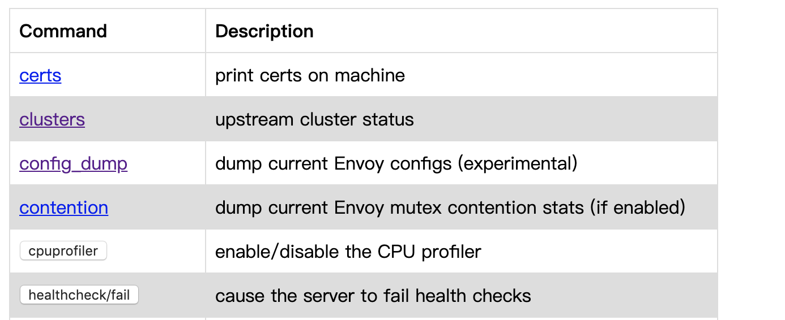
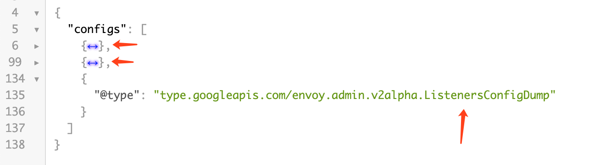
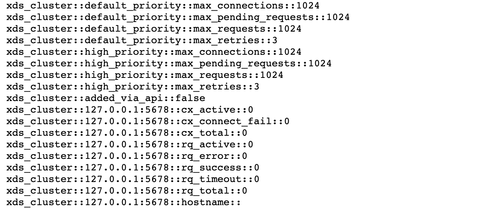
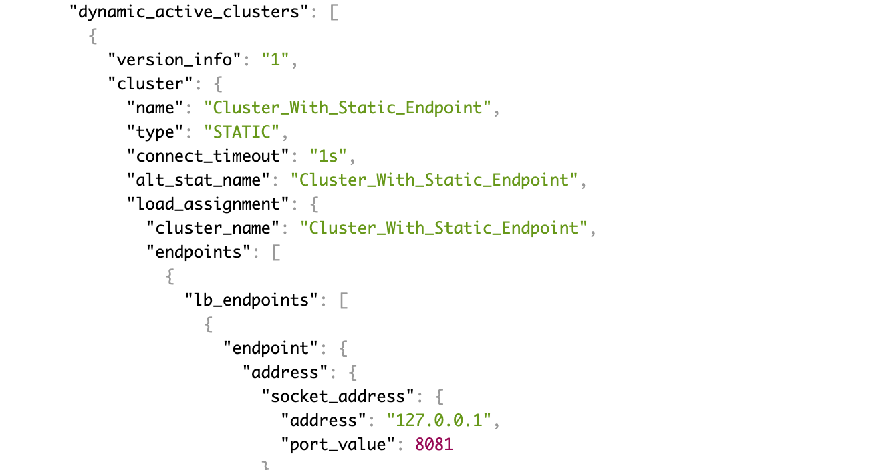
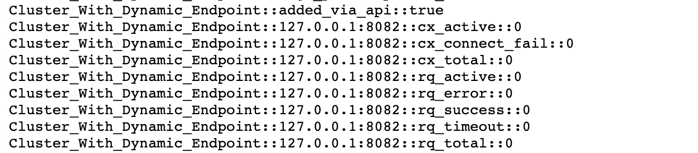
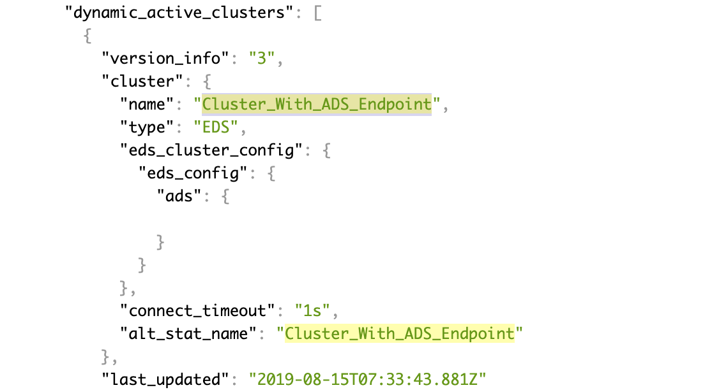
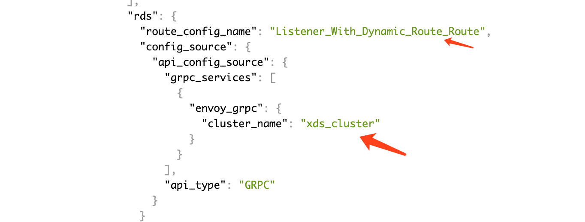

视频讲解：Envoy手把手入门视频讲解
go-control-plane 下发配置示例—运行和效果
这里详细演示动态配置的几种组合，使用的 envoy 配置文件是 envoy-1-ads-with-xds.yaml。
启动 envoy：
./run.sh envoy-1-ads-with-xds.yaml
envoy 初始状态
envoy 启动之后，通过 admin 地址（浏览器打开 IP:9901 ） 查看 envoy 的当前配置以及内部情况：

envoy 的当前配置通过 IP:9901/config_dump 查看，通过该地址查询的配置文件是分为几段的：
- 第一段为 "@type": "type.googleapis.com/envoy.admin.v2alpha.BootstrapConfigDump"，是 envoy 启动时的配置
- 第二段为 "@type": "type.googleapis.com/envoy.admin.v2alpha.ClustersConfigDump"，是 cluster 配置，这里现在只有静态配置的 ads_cluster
- 第三段为 "@type": "type.googleapis.com/envoy.admin.v2alpha.ListenersConfigDump"，第三段现在是空的

下发 listener 和 route 后会多出两段配置，里面是动态下发的 route：
- "@type": "type.googleapis.com/envoy.admin.v2alpha.ScopedRoutesConfigDump"
- "@type": "type.googleapis.com/envoy.admin.v2alpha.RoutesConfigDump"

endpoint 在配置页面中看不到，要到 IP:9901/clusters 中查看：

启动控制平面
演示实现的控制平面的功能如下，每按一次回车，下发一组配置：
$ ./xds
Enter to update version 1: Cluster_With_Static_Endpoint
ok
Enter to update version 2: Cluster_With_Dynamic_Endpoint
ok
Enter to update version 3: Cluster_With_ADS_Endpoint
ok
Enter to update version 4: Listener_With_Static_Route
ok
Enter to update version 5: Listener_With_Dynamic_Route
ok
Enter to update version 6: Listener_With_ADS_Route
ok
Enter to exit: ^C
使用静态 endpoint 的 cluster
{
clusterName := "Cluster_With_Static_Endpoint"
fmt.Printf("Enter to update version 1: %s", clusterName)
_, _ = fmt.Scanf("\n", &input)
var addrs []ADDR
addrs = append(addrs, ADDR{
Address: "127.0.0.1",
Port: 8081,
})
cluster := Cluster_STATIC(clusterName, addrs)
node_config.clusters = append(node_config.clusters, cluster)
Update_SnapshotCache(snapshotCache, node_config, "1")
fmt.Printf("ok")
}
下发后多出一个名为 Cluster_With_Static_Endpoint 的 cluster，地址为 127.0.0.1:8081。

使用 eds 发现 endpoint 的 cluster
{
clusterName := "Cluster_With_Dynamic_Endpoint"
fmt.Printf("\nEnter to update version 2: %s", clusterName)
_, _ = fmt.Scanf("\n", &input)
var addrs []ADDR
addrs = append(addrs, ADDR{
Address: "127.0.0.1",
Port: 8082,
})
point := EDS(clusterName, addrs)
node_config.endpoints = append(node_config.endpoints, point)
var edsCluster []string
edsCluster = append(edsCluster, "xds_cluster") //静态的配置的 cluster
edsName := clusterName
cluster := Cluster_EDS(clusterName, edsCluster, edsName)
node_config.clusters = append(node_config.clusters, cluster)
Update_SnapshotCache(snapshotCache, node_config, "2")
fmt.Printf("ok")
}
下发后多出一个名为 Cluster_With_Dynamic_Endpoint 的 cluster，地址为 127.0.0.1:8082。

cluster 中没有直接配置 endpoint，指定从 xds_cluster 中获取，在 IP:9901/clusters 中可以看到 endpoint：

使用 ads 发现 endpoint 的 cluster
{
clusterName := "Cluster_With_ADS_Endpoint"
fmt.Printf("\nEnter to update version 3: %s", clusterName)
_, _ = fmt.Scanf("\n", &input)
var addrs []ADDR
addrs = append(addrs, ADDR{
Address: "127.0.0.1",
Port: 8083,
})
edsName := clusterName
point := EDS(edsName, addrs)
node_config.endpoints = append(node_config.endpoints, point)
cluster := Cluster_ADS("Cluster_With_ADS_Endpoint")
node_config.clusters = append(node_config.clusters, cluster)
Update_SnapshotCache(snapshotCache, node_config, "3")
fmt.Printf("ok")
}
下发后多出一个名为 Cluster_With_ADS_Endpoint 的 cluster，地址为 127.0.0.1:8083。
ads 的配置和 xds 不同，不需要指定 cluster，声明使用 ADS 即可：

使用静态路由的 listener
前面的几个步骤下发了 cluster，没有下发 listener，无法访问 cluster，要访问 cluster 必须配置一个指向它的 listener。
{
listenerName := "Listener_With_Static_Route"
fmt.Printf("\nEnter to update version 4: %s", listenerName)
_, _ = fmt.Scanf("\n", &input)
clusterName := "Listener_With_Static_Route_Target_Cluster"
var addrs []ADDR
addrs = append(addrs, ADDR{
Address: "127.0.0.1",
Port: 8080,
})
cluster := Cluster_STATIC(clusterName, addrs)
node_config.clusters = append(node_config.clusters, cluster)
lis := Listener_STATIC(listenerName, 84, "echo.example", "/abc", clusterName)
node_config.listeners = append(node_config.listeners, lis)
Update_SnapshotCache(snapshotCache, node_config, "4")
fmt.Printf("ok")
}
上面的代码下发了一个监听 84 端口、将请求转发到 172.17.0.2:8080 的 listener，转发规则为 Host 是 echo.example，prefix 是 /abc： 这里的 172.17.0.2:8080，是 初次体验 中启动的 echoserver 容器的地址。
下发以后，在管理界面可以看到下面的配置：

这时候可以通过 84 端口访问 cluster：
$ curl -H "Host: echo.example" 127.0.0.1:84/abc
Hostname: 7759cabd7402
Pod Information:
-no pod information available-
Server values:
server_version=nginx: 1.13.3 - lua: 10008
Request Information:
client_address=172.17.0.3
method=GET
real path=/abc
query=
request_version=1.1
request_scheme=http
request_uri=http://echo.example:8080/abc
Request Headers:
accept=*/*
content-length=0
host=echo.example
user-agent=curl/7.54.0
x-envoy-expected-rq-timeout-ms=15000
x-forwarded-proto=http
x-request-id=8bda7006-87dd-4251-ad3a-431d610ef806
Request Body:
-no body in request-
使用 xds 发现路由的 listener
{
listenerName := "Listener_With_Dynamic_Route"
fmt.Printf("\nEnter to update version 5: %s", listenerName)
_, _ = fmt.Scanf("\n", &input)
clusterName := "Listener_With_Dynamic_Route_Target_Cluster"
var addrs []ADDR
addrs = append(addrs, ADDR{
Address: "172.17.0.2",
Port: 8080,
})
cluster := Cluster_STATIC(clusterName, addrs)
node_config.clusters = append(node_config.clusters, cluster)
routeName := "Listener_With_Dynamic_Route_Route"
r := Route(routeName, "echo.example", "/123", clusterName)
node_config.routes = append(node_config.routes, r)
var rdsCluster []string
rdsCluster = append(rdsCluster, "xds_cluster") //静态的配置的 cluster
lis := Listener_RDS(listenerName, 85, routeName, rdsCluster)
node_config.listeners = append(node_config.listeners, lis)
Update_SnapshotCache(snapshotCache, node_config, "5")
fmt.Printf("ok")
}
上面代码中 rds 配置的是 xds_cluster，xds_cluster 是配置文件中事先配置的静态 cluster：

使用 ads 发现路由的 listener
{
listenerName := "Listener_With_ADS_Route"
fmt.Printf("\nEnter to update version 6: %s", listenerName)
_, _ = fmt.Scanf("\n", &input)
clusterName := "Listener_With_ADS_Route_Target_Cluster"
var addrs []ADDR
addrs = append(addrs, ADDR{
Address: "172.17.0.2",
Port: 8080,
})
cluster := Cluster_STATIC(clusterName, addrs)
node_config.clusters = append(node_config.clusters, cluster)
routeName := "Listener_With_ADS_Route_Route"
r := Route(routeName, "echo.example", "/a1b", clusterName)
node_config.routes = append(node_config.routes, r)
lis := Listener_ADS(listenerName, 86, routeName)
node_config.listeners = append(node_config.listeners, lis)
Update_SnapshotCache(snapshotCache, node_config, "6")
fmt.Printf("ok")
}
上面代码中 rds 配置的是 ads，ads 指向配置文件中事先配置的 ads_cluster：